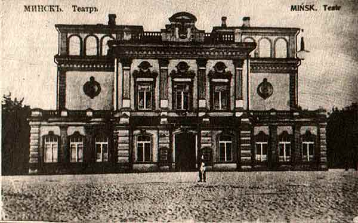
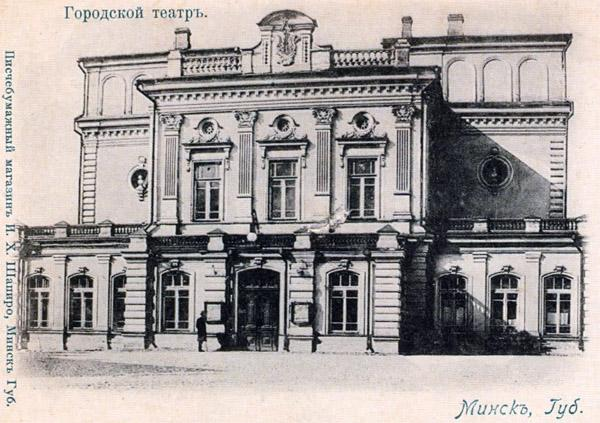
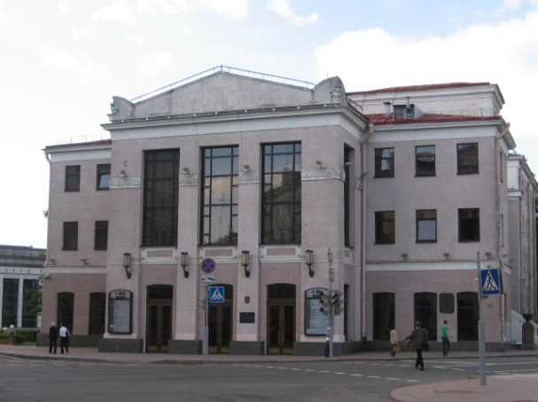

Minsk Governor Duke N. N. Trubetskoy put the question of the construction of a new theater to the City Council, as the old one on the Cathedral square burned down in 1884. On August 18, 1887 the Council unanimously decided to elect a construction Commission and assign it the duties of raising funds. 26 June 1888 at 3 p.m. to community bookmarks buildings future theater profits Grand Duke Vladimir Alexandrovich with his wife Grand Duchess Maria Pavlovna. Nikanor Smolich, Archpriest of St. Catherine's Cathedral, conducted the service, and Their Imperial Highnesses lowered a few gold coins on the place of laying and laid bricks on them. «Thus was laid the foundation of the most beautiful and sophistication building of Minsk City Theatre», says the «Commemorative book of the Minsk province in 1910», published a year earlier by the Minsk Provincial Statistical Committee. [10, p. 140]
The construction of the theater began in 1888, but as the walls were raised, it became obvious that the money collected (25 thousand roubles) would not be enough. The construction stopped, and only after Karol Czapski offered to sell the city forest to the merchant Rogov from Mikhalyanka for 45658 roubles the long-term construction was completed. Together with all additional fees and donations, the new theater cost the city 102 thousand roubles.
The theater building was built by architect K. Kozlovskiy in 1890. The construction was carried out by engineer K. Vvedensky. Architect V. F. Maas supervised the interior decoration.
The theatre was founded on June 17, 1890. All the technical achievements of that time were used in the project of the theater. The stage had a depth of 10.6 m, a width of 14.9 m, a height of 17.0 m. This gave great opportunities for the implementation of mechanical techniques, installation of various scenery, lifting the curtain. The horseshoe-shaped auditorium had three tiers and was designed for 550 seats, later this number raised up to 700. The stalls and boxes of the first tier were intended for the wealthier public, the balcony for the poorest. The curtain for the stage was performed by young decorators Yu. Reinberg and G. Wenig. The interior was decorated with modeling, paintings on the walls, portraits of Mikhail Glinka, Alexander Pushkin, Nikolai Gogol, Alexander Ostrovskiy. The portal of the stage was decorated with sculted emblem of Minsk province. The building determined the composition of Alexander square. The main facade of the theater faced the square formed by the intersection of Podgornaya (K. Marx) and Petropavlovskaya (F. Engels) streets. The head of Minsk Count Karol Czapskiy and the Governor of the Minsk province N. N. Trubetskoy attended its opening with his entourage. The amateur play by O. File «Sphinx» was staged in the evening, then a Banquet took plece. The first season in the theater began on September 9, 1890 with the performance of A. Potekhin «Malice of the day». The cost of tickets (from 20 kopecks for a place on the balcony («in the gallery») to 5 roubles for a place in the box) allowed almost all layers of residents to attend performances. Opera, drama and operetta troupes from Vilnius, Moscow and St. Petersburg, the Paris theatre under the direction of M. Meterlink, the Italian Opera by F. Kostelan performed in the theatre building. In addition to performances, it hosted various city celebrations. Thus, in 1899 Minsk residents celebrated the 100th anniversary of the birth of A. S. Pushkin. For the first two years the theatre was rented to a well-known entrepreneur A. Burr, who also directed the theatre in Vilnius. For both theatres, he recruited a drama and opera troupe of fairly strong composition. [14, Pp. 160-161] Now the theater is located at Engels street, 7.


